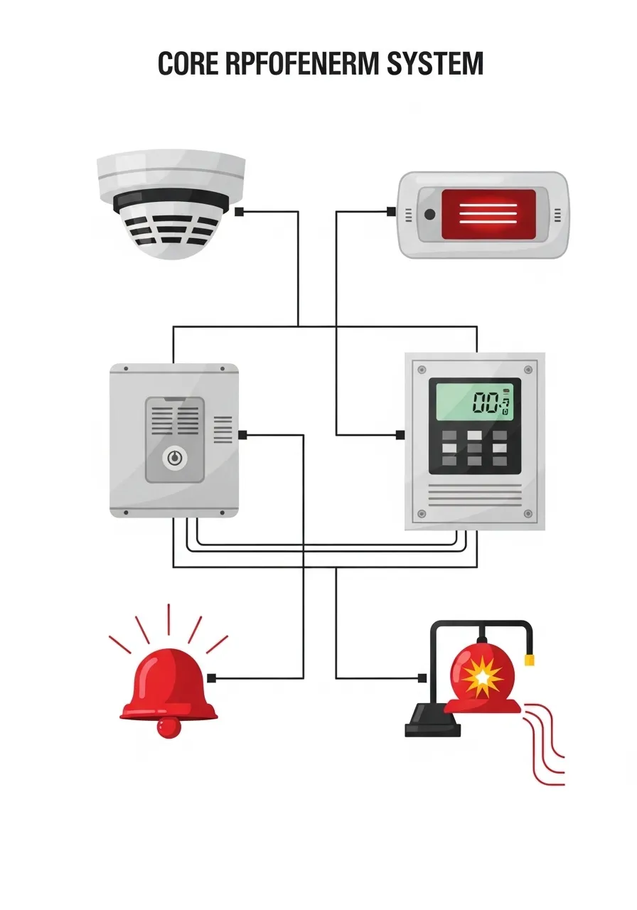
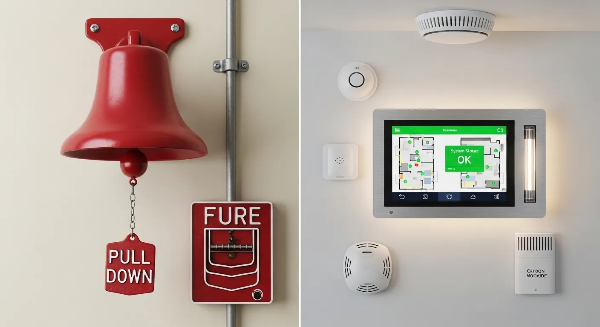

هل نظام إنذار الحريق الخاص بك حامي حقيقي؟ دليل شامل للسلامة في عام 2026
في عالم يتطور بسرعة، تتزايد أهمية أنظمة الأمان والحماية. وبين جميع التهديدات المحتملة، يبقى الحريق أحد أخطرها. ولكن هل تساءلت يومًا: هل نظام إنذار الحريق الخاص بك فعال؟ وهل هو مواكب لأحدث معايير السلامة في عام 2026؟ هذا السؤال جوهري لضمان سلامتك وسلامة ممتلكاتك. إن أنظمة إنذار الحريق ليست مجرد أجهزة، بل هي خط الدفاع الأول الذي يمكن أن يحدث فرقًا كبيرًا بين الكارثة والسلامة.
قد تظن أن مجرد وجود نظام إنذار حريق يجعلك آمنًا، لكن الحقيقة أبعد من ذلك. فعالية النظام تعتمد على عوامل متعددة، بدءًا من جودته وتركيبه الصحيح، وصولًا إلى صيانته الدورية وتحديثه لمواكبة التطورات التكنولوجية ومعايير السلامة الجديدة. في هذا الدليل الشامل لعام 2026، سنتعمق في كل ما تحتاج معرفته للتأكد من أن نظام إنذار الحريق الخاص بك هو بالفعل حاميك الحقيقي.

لماذا يعتبر نظام إنذار الحريق ضرورة قصوى؟
تتجاوز أهمية أنظمة إنذار الحريق مجرد الامتثال للوائح. إنها استثمار في الأرواح والممتلكات. ففي لحظات الخطر الأولى، كل ثانية تُعد. يوفر نظام الإنذار المبكر الوقت الثمين للإخلاء الآمن أو للتدخل السريع قبل انتشار الحريق بشكل لا يمكن السيطرة عليه. بدون نظام فعال، يمكن أن تتحول شرارة صغيرة إلى كارثة مدمرة في غضون دقائق.
تطور أنظمة إنذار الحريق عبر الزمن
شهدت أنظمة إنذار الحريق تطورًا كبيرًا على مر السنين. من الكاشفات البسيطة التي تعتمد على الحرارة أو الدخان، إلى الأنظمة الذكية المتكاملة التي يمكنها التمييز بين أنواع الدخان المختلفة، والتواصل مع خدمات الطوارئ تلقائيًا، وحتى الاندماج مع أنظمة المنزل الذكي الأخرى. في عام 2026، أصبحت هذه الأنظمة أكثر دقة وموثوقية وقدرة على التكيف مع البيئات المختلفة، مما يجعلها أداة لا غنى عنها في كل منشأة سكنية وتجارية.
مكونات نظام إنذار الحريق الفعال
لفهم كيف يعمل نظام إنذار الحريق كحامٍ حقيقي، من المهم معرفة مكوناته الأساسية وكيف تتكامل معًا:
كواشف الدخان والحرارة: العين والأذن
تعد كواشف الدخان والحرارة هي المستشعرات الأساسية للنظام. كواشف الدخان تكتشف الجزيئات الناتجة عن الاحتراق، بينما تتفاعل كواشف الحرارة مع الارتفاع السريع في درجة الحرارة أو تجاوزها لحد معين. يجب توزيع هذه الكواشف بشكل استراتيجي لتغطية جميع المناطق المعرضة للخطر.
لوحة التحكم: العقل المدبر
لوحة التحكم هي مركز النظام. تستقبل الإشارات من الكواشف، تحدد موقع الخطر، وتنشط أجهزة الإنذار. الأنظمة الحديثة في عام 2026 تتميز بلوحات تحكم ذكية يمكنها تحليل البيانات، وتشخيص الأعطال، والتواصل مع أنظمة أخرى.
أجهزة الإنذار: الصوت الذي ينقذ الأرواح
تشمل أجهزة الإنذار الأجراس، الصفارات، ومكبرات الصوت، بالإضافة إلى أجهزة الإنذار المرئية مثل الأضواء الوامضة، وهي ضرورية للأشخاص الذين يعانون من ضعف السمع. هدفها هو تنبيه جميع المتواجدين في المبنى بوجود خطر وشيك.
أنواع أنظمة إنذار الحريق الحديثة في عام 2026
مع التقدم التكنولوجي، تتوفر الآن مجموعة واسعة من أنظمة إنذار الحريق، كل منها مصمم لتلبية احتياجات مختلفة:
الأنظمة التقليدية (Conventional Systems)
تقسم هذه الأنظمة المناطق إلى 'مناطق' أو 'دوائر'. عند اكتشاف حريق، تشير لوحة التحكم إلى المنطقة التي حدث فيها الإنذار، ولكن ليس الموقع الدقيق داخل تلك المنطقة. تعتبر مناسبة للمباني الصغيرة والمتوسطة.
الأنظمة المعنونة (Addressable Systems)
في هذه الأنظمة، يمتلك كل كاشف أو جهاز إنذار عنوانًا فريدًا. هذا يسمح للوحة التحكم بتحديد الموقع الدقيق للحريق، مما يسهل عملية الإخلاء والتدخل السريع. تعتبر مثالية للمباني الكبيرة والمعقدة.
الأنظمة اللاسلكية (Wireless Systems)
تستخدم هذه الأنظمة الاتصال اللاسلكي بين الكواشف ولوحة التحكم، مما يقلل من الحاجة إلى تمديد الكابلات. توفر مرونة كبيرة في التركيب والتوسع، وتعتبر خيارًا ممتازًا للمباني التاريخية أو التي يصعب فيها تمديد الكابلات.
الأنظمة المتكاملة والذكية
تمثل هذه الأنظمة قمة التطور في عام 2026. تدمج أنظمة إنذار الحريق مع أنظمة الأمن الأخرى مثل كاميرات المراقبة، التحكم في الوصول، وحتى أنظمة إدارة المباني (BMS). يمكنها تقديم تحليلات متقدمة، الإبلاغ عن الأعطال تلقائيًا، وحتى توجيه المستجيبين الأوائل إلى موقع الحريق بدقة.

هل نظامك الحالي كافٍ؟ علامات تدل على الحاجة للتحديث
للتأكد من أن نظام إنذار الحريق الخاص بك حامي حقيقي في عام 2026، يجب أن تكون على دراية بالعلامات التي تشير إلى أنه قد لا يكون كافيًا أو بحاجة إلى تحديث:
العمر الافتراضي للنظام
مثل أي جهاز إلكتروني، لأنظمة إنذار الحريق عمر افتراضي. إذا كان نظامك قديمًا، فقد لا يكون متوافقًا مع أحدث التقنيات والمعايير، وقد تزداد احتمالية أعطاله. يوصى بمراجعة وتحديث الأنظمة القديمة بانتظام.
التشغيل الخاطئ المتكرر
الإنذارات الكاذبة المتكررة ليست مزعجة فحسب، بل يمكن أن تؤدي أيضًا إلى تجاهل الإنذارات الحقيقية. قد تشير هذه الإنذارات إلى وجود مشكلة في الكواشف أو في لوحة التحكم، أو إلى أن النظام غير مناسب للبيئة التي يعمل فيها.
عدم الامتثال للمعايير الحديثة 2026
تتغير معايير السلامة من الحريق وتتطور باستمرار. إذا كان نظامك لا يمتثل لأحدث المعايير المحلية والدولية لعام 2026، فقد لا يوفر الحماية الكافية وقد يعرضك للمساءلة القانونية.
أهمية الصيانة الدورية لنظام إنذار الحريق
لا يكفي تركيب نظام إنذار حريق متطور؛ بل يجب صيانته بانتظام لضمان عمله بكفاءة عند الحاجة. أهمية صيانة أنظمة إنذار الحريق 2026 لا يمكن المبالغة فيها.
الفحص والاختبار الروتيني
يشمل ذلك فحص جميع الكواشف، أجهزة الإنذار، ولوحة التحكم. يجب إجراء اختبارات وظيفية منتظمة للتأكد من أن كل جزء من النظام يعمل بشكل صحيح. يوصى بإجراء هذه الفحوصات بواسطة فنيين متخصصين.
استبدال البطاريات والمكونات التالفة
تعد البطاريات جزءًا حيويًا من النظام، خاصةً في حالة انقطاع التيار الكهربائي. يجب استبدالها بانتظام. كما يجب استبدال أي مكونات تالفة أو معطوبة على الفور لضمان استمرارية عمل النظام.
كيف تختار نظام إنذار الحريق المناسب لك في 2026؟
اختيار النظام الصحيح هو مفتاح الحماية الفعالة. إليك بعض معايير اختيار أفضل نظام إنذار حريق:
تقييم المخاطر واحتياجات المكان
يجب أن يبدأ الاختيار بتقييم دقيق للمخاطر المحتملة في المبنى ونوع النشاط الذي يتم فيه. هل هو منزل سكني، مكتب، مصنع، أو مستودع؟ كل بيئة لها متطلباتها الخاصة.
الاعتماد على الشركات المتخصصة
لضمان التركيب الصحيح والصيانة الفعالة، من الضروري التعاقد مع شركات متخصصة وذات سمعة طيبة في مجال أنظمة إنذار الحريق. يمكنهم تقديم المشورة بشأن أفضل نظام لاحتياجاتك.
الشهادات والمعايير الدولية
تأكد من أن النظام الذي تختاره، والشركة التي تقوم بالتركيب، يمتثلان للمعايير والشهادات المحلية والدولية المعترف بها في عام 2026، مثل معايير NFPA و ISO.
الخلاصة: استثمر في حمايتك
في الختام، الإجابة على سؤال هل نظام إنذار الحريق الخاص بك حامي حقيقي؟ تعتمد على مدى اهتمامك به. إنه ليس مجرد جهاز يتم تركيبه ونسيانه. إنه نظام حيوي يتطلب اهتمامًا وصيانة مستمرة. من خلال فهم مكوناته، اختيار النوع المناسب، والتأكد من صيانته بانتظام، يمكنك أن تطمئن إلى أنك وأحبائك وممتلكاتك محميون بأفضل شكل ممكن في عام 2026. لا تدع الحماية من الحريق تكون مجرد فكرة متأخرة؛ اجعلها أولوية قصوى.
الأسئلة الشائعة حول أنظمة إنذار الحريق
ما هو العمر الافتراضي المتوقع لنظام إنذار الحريق؟
عادةً ما يتراوح العمر الافتراضي لأنظمة إنذار الحريق بين 10 إلى 15 عامًا، ولكن هذا يمكن أن يختلف بناءً على جودة النظام والصيانة الدورية التي يتلقاها. الكواشف الفردية قد تحتاج إلى استبدالها بشكل متكرر أكثر.
كم مرة يجب فحص وصيانة نظام إنذار الحريق؟
يوصى بإجراء فحص واختبار شهري بسيط من قبل المالك، وفحص سنوي شامل من قبل فني متخصص. بعض المعايير قد تتطلب فحوصات ربع سنوية أو نصف سنوية للمباني التجارية.
هل يمكنني تركيب نظام إنذار الحريق بنفسي؟
بالنسبة للأنظمة البسيطة في المنازل الصغيرة، قد يكون التركيب الذاتي ممكنًا لبعض أنواع كواشف الدخان. ومع ذلك، للحصول على نظام حماية شامل وفعال، خاصة في المباني الكبيرة أو التجارية، يوصى بشدة بالاستعانة بمتخصصين لضمان التركيب الصحيح والامتثال للمعايير.
ما الفرق بين أنظمة إنذار الحريق التقليدية والمعنونة؟
تحدد الأنظمة التقليدية الحريق ضمن 'منطقة' عامة، بينما تحدد الأنظمة المعنونة الموقع الدقيق لكل كاشف أو جهاز إنذار، مما يوفر معلومات أكثر تفصيلاً وسرعة استجابة أكبر.
ما هي أحدث التقنيات في أنظمة إنذار الحريق لعام 2026؟
تشمل أحدث التقنيات في عام 2026 الأنظمة اللاسلكية ذات الكفاءة العالية، الأنظمة المتكاملة مع حلول المنزل الذكي، الكواشف متعددة المعايير التي يمكنها اكتشاف أنواع مختلفة من الدخان والحرارة، والأنظمة التي تستخدم الذكاء الاصطناعي لتحليل البيانات وتقليل الإنذارات الكاذبة.